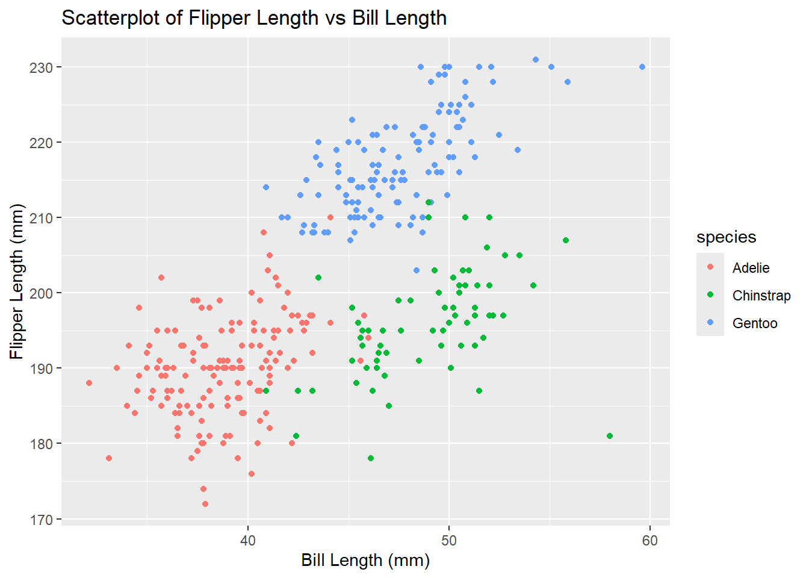

Download the package in the console and load the dataset.
data("penguins", package = "palmerpenguins")
head(penguins)## # A tibble: 6 × 8
## species island bill_length_mm bill_depth_mm flipper_length_mm body_mass_g
## <fct> <fct> <dbl> <dbl> <int> <int>
## 1 Adelie Torgersen 39.1 18.7 181 3750
## 2 Adelie Torgersen 39.5 17.4 186 3800
## 3 Adelie Torgersen 40.3 18 195 3250
## 4 Adelie Torgersen NA NA NA NA
## 5 Adelie Torgersen 36.7 19.3 193 3450
## 6 Adelie Torgersen 39.3 20.6 190 3650
## # ℹ 2 more variables: sex <fct>, year <int>summary(penguins)## species island bill_length_mm bill_depth_mm
## Adelie :152 Biscoe :168 Min. :32.10 Min. :13.10
## Chinstrap: 68 Dream :124 1st Qu.:39.23 1st Qu.:15.60
## Gentoo :124 Torgersen: 52 Median :44.45 Median :17.30
## Mean :43.92 Mean :17.15
## 3rd Qu.:48.50 3rd Qu.:18.70
## Max. :59.60 Max. :21.50
## NA's :2 NA's :2
## flipper_length_mm body_mass_g sex year
## Min. :172.0 Min. :2700 female:165 Min. :2007
## 1st Qu.:190.0 1st Qu.:3550 male :168 1st Qu.:2007
## Median :197.0 Median :4050 NA's : 11 Median :2008
## Mean :200.9 Mean :4202 Mean :2008
## 3rd Qu.:213.0 3rd Qu.:4750 3rd Qu.:2009
## Max. :231.0 Max. :6300 Max. :2009
## NA's :2 NA's :2nrow(penguins)## [1] 344ncol(penguins)## [1] 8mean_flipper_length = penguins |> pull(flipper_length_mm) |> mean(na.rm = T)
mean_flipper_length## [1] 200.9152The penguins dataset contains 344 rows and 8 columns, including variables “species”, “island”, “bill_length_mm”, “bill_depth_mm”, “flipper_length_mm”, “body_mass_g”, “sex” and “year”.
The species includes “Adelie”, “Chinstrap” and “Gentoo”.
The mean flipper length is 200.9 mm.
Then create a scatter plot.
ggplot(penguins, aes(x = bill_length_mm, y = flipper_length_mm, colour = species)) +
geom_point() +
labs(title = "Scatterplot of Flipper Length vs Bill Length",
x = "Bill Length (mm)",
y = "Flipper Length (mm)")
ggsave("hw1_scatter_plot.pdf", height = 4, width = 6)Create a dataframe.
set.seed(1234)
dat = tibble(
vec_numeric = rnorm(10, mean = 0, sd = 1),
vec_logical = vec_numeric >0,
vec_character = c("a", "b", "c", "d", "e", "f", "g", "h", "i", "j"),
vec_factor = factor(c("low", "moderate", "high", "low", "moderate", "high",
"low", "moderate", "high", "high"))
)
print(dat)## # A tibble: 10 × 4
## vec_numeric vec_logical vec_character vec_factor
## <dbl> <lgl> <chr> <fct>
## 1 -1.21 FALSE a low
## 2 0.277 TRUE b moderate
## 3 1.08 TRUE c high
## 4 -2.35 FALSE d low
## 5 0.429 TRUE e moderate
## 6 0.506 TRUE f high
## 7 -0.575 FALSE g low
## 8 -0.547 FALSE h moderate
## 9 -0.564 FALSE i high
## 10 -0.890 FALSE j highdat |> pull(vec_numeric) |> mean()## [1] -0.3831574dat |> pull(vec_logical) |> mean()## [1] 0.4dat |> pull(vec_character) |> mean()## [1] NAdat |> pull(vec_factor) |> mean()## [1] NAIf taking the mean, the numeric vector and logical vector work. The character vector and factor vector don’t work, returning NA.
Convert the logical, character, and factor variables to numeric variables.
num_log =
dat |> pull(vec_logical) |> as.numeric()
num_cha =
dat |> pull(vec_character) |> as.numeric()
num_fac =
dat |> pull(vec_factor) |> as.numeric()
num_log
num_cha
num_facThe logical variables are successfully converted to numeric variables. “TRUE” becomes 1 and “FALSE” becomes 0. This explains why taking the mean of a logical vector works, and the mean reflects the proportion of “TRUE” in this vector.
The conversion of character variables fail and it returns NA. This is because characters can’t be interpreted as numbers, and it explains why taking the mean of a character vector fails.
The factor variables are successfully converted to numeric variables because each level corresponds to a number. “low” becomes 2, “moderate” becomes 3 and “high” becomes 1. But it has no meaning in practice so mean() can’t take the mean of a factor vector.